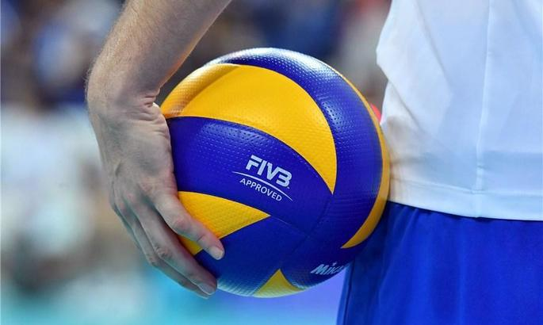

Загальні відомості:
Волейбол — спортивна гра з м'ячем, у якій дві команди змагаються на спеціальному майданчику, розділеному сіткою. Волейбол є олімпійським видом спорту.Існують декілька різних версій гри. Мета гри — направити м'яч над сіткою таким чином, щоб він доторкнувся до ділянки суперника та запобігти спробі гравців суперника зробити те саме. Для цього команда має торкнутися до м'яча не більше трьох разів (або, можливо, ще один раз на блоку).

Історія:
Винахідником волейболу вважається Вільям Джон Морган, викладач фізичного виховання коледжу Асоціації молодих християн (YMCA) в місті Холіоке (штат Массачусетс, США). 9 лютого 1895 року в спортивному залі він підвісив тенісну сітку на висоті 197 см, і його учні, число яких на майданчику не обмежувалося, стали перекидати через неї баскетбольний м'яч. Морган назвав нову гру «мінтонет». Роком пізніше гра демонструвалася на конференції коледжів асоціації молодих християн в Спрінгфілді і за пропозицією професора Альфреда Т. Хальстеда отримала нову назву — «волейбол». У 1897 році були опубліковані перші правила волейболу. Загальні правила гри сформувалися в 1915—25. У країнах Америки, Африки, Європи практикувався волейбол з шістьма гравцями на майданчику, в Азії — з дев'ятьма або дванадцятьма гравцями на майданчику 11×22 м без зміни позицій гравцями під час матчу. У 1922 році проведені перші загальнонаціональні змагання — в Брукліні відбувся чемпіонат YMCA за участю 23 чоловічих команд. У тому ж році була утворена федерація баскетболу і волейболу Чехословаччини — перша у світі спортивна організація з волейболу. У другій половині 1920-х років виникли національні федерації Болгарії, СРСР, США і Японії.Розклад змагань
| Дата | Команди | Місто |
|---|---|---|
| 05.03 | Новатор Хмельницький і Локомотив Харьків | Київ |
| 07.03 | Житичі Житомир і Барком | Житомир |
| 12.03 | Локомотив Харьків і Юракадемія | Харків |
| 13.03 | ВНАУ і Буревестник | Харків |